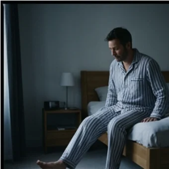

Trennbare Verben: aufstehen, einkaufen, anrufen
Manche Verben zerbrechen im Satz in zwei Teile. Der vordere Teil rutscht ganz ans Ende — und wer ihn überhört, versteht den halben Satz nicht.
A1 · ab A1
Ein Verb, und es fällt auseinander
anrufen steht so im Wörterbuch. Im Satz wird daraus Ich rufe an — und zwischen rufe und an können noch fünf Wörter stehen. Genau daran erkennt man Deutsch.



Die Vorsilbe wandert ans Ende
Das Verb hat zwei Teile: die Vorsilbe (auf-, ein-, an-, ab-, mit-) und den Stamm (stehen, kaufen, rufen). Im Hauptsatz trennen sie sich. Alles, was dazugehört, steht dazwischen.
| Verb | Was es heißt | Im Satz |
|---|---|---|
| aufstehen | aus dem Bett kommen | Ich stehe um sechs auf. |
| einkaufen | Lebensmittel besorgen | Wir kaufen am Samstag ein. |
| anrufen | telefonieren | Sie ruft ihre Mutter an. |
| abholen | etwas irgendwo mitnehmen | Er holt das Paket ab. |
| mitkommen | zusammen gehen | Kommst du heute Abend mit? |
| anfangen | beginnen | Der Kurs fängt um neun an. |
✔ Ich rufe dich morgen an.
Ich anrufe dich morgen.
✔ Wann fängt der Kurs an?
Wann anfängt der Kurs?

Getrennt oder zusammen?
Es gibt nur drei Fälle. Wenn du sie einmal nebeneinander siehst, verwechselst du sie kaum noch.
Quiz: wohin mit der Vorsilbe?
Tippe die richtige Antwort an. Die Erklärung erscheint sofort.
Lückentext: ein Tag von morgens bis abends
Wähle in jeder Lücke die passende Vorsilbe.
Verb und passender Satz
Tippe links ein Verb an, dann rechts den Satz, in dem es steckt.
Das Verb
Der Satz
Sprechen — selbst bilden
Tippe auf „Neue Karte“ und antworte in einem ganzen Satz. Die Vorsilbe gehört ans Ende.
Weiterüben: vierzehn Aufgaben im Konto
Auf dieser Seite steht die Regel. Zum Üben liegen im Konto vierzehn weitere Aufgaben zu den trennbaren Verben — mit Lösung und Erklärung nach jedem Satz.
Zu den Aufgaben🎯 Mission der Woche
Mission: Erzähl deinen Tag von morgens bis abends in sechs Sätzen. In jedem Satz muss ein trennbares Verb stehen — und die Vorsilbe ganz am Ende.
🍎 Für die Lehrkraft – Stundenablauf (60 Min.)
Schwerpunkt: die Trennung hörbar und sichtbar machen. Die Vorsilbe als Karte in die Hand geben und beim Sprechen ans Satzende tragen lassen — das verankert die Regel körperlich.
Lernziel
- TN bilden Hauptsätze mit trennbaren Verben und stellen die Vorsilbe ans Satzende.
- TN erkennen an der Betonung, ob ein Verb trennbar ist.
- TN wissen, dass die Vorsilbe im Nebensatz und nach Modalverben am Verb bleibt.
Ablauf
- 0–5' Aufwärmen: drei Bilder, TN sagen je einen Satz.
- 5–15' Satzbau-Leiste. Satz Schritt für Schritt verlängern, Vorsilbe bleibt hinten.
- 15–24' Tabelle durchgehen, zu jedem Verb ein eigener Satz der TN.
- 24–32' Betonung hören: Wortpaare vorsprechen, TN klatschen bei Betonung vorn.
- 32–42' Quiz und Lückentext gemeinsam.
- 42–50' Zuordnen, danach eigene Sätze zum eigenen Tagesablauf.
- 50–58' Sprechkarten.
- 58–60' Mission erklären.
Häufige Fehler & schnelle Korrektur
- Vorsilbe bleibt vorn (ich anrufe dich): die Vorsilbe als Karte physisch ans Satzende legen lassen.
- Vorsilbe verschwindet ganz (ich rufe dich): auf die Bedeutung zeigen — rufen heißt schreien, nicht telefonieren.
- Trennung im Nebensatz (weil ich stehe auf): den Satz ohne weil sprechen, dann mit — den Unterschied hören lassen.
- Trennung nach Modalverb (ich muss aufstehe): nach muss/kann/will bleibt der Infinitiv ganz.
Vor dem Unterricht
- Kärtchen mit Vorsilben vorbereiten: auf, ein, an, ab, mit.
- Den eigenen Tagesablauf als Beispiel bereitlegen.
- Nach dem Unterricht auf die vierzehn Aufgaben im Konto hinweisen.